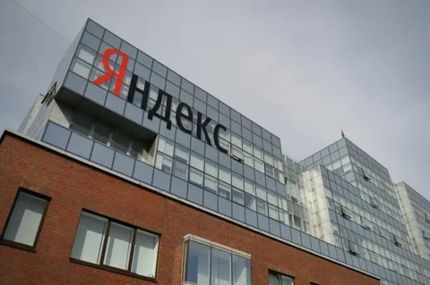
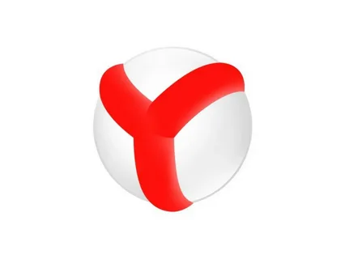
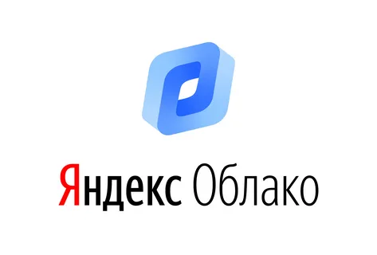
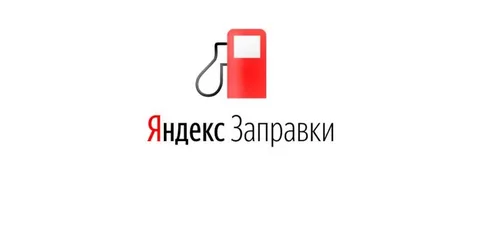
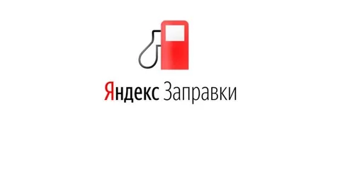
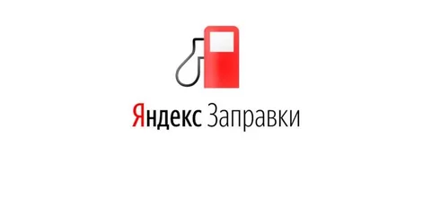
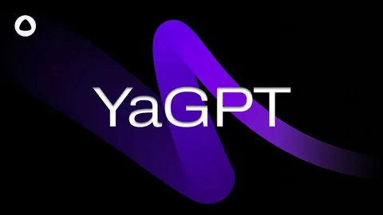

История и развитие компании
Введение
Год основания: 1997
Основатели: Аркадий Волож, Илья Сегалович
Первоначальная цель: Разработка поисковой системы
Яндекс
- это российская транснациональная компания в отрасли информационных
технологий, чьё головное юридическое лицо зарегистрировано в
Калининградской области Российской Федерации, владеющая одноимённой
системой поиска в интернете, интернет-порталом и веб-службами в
нескольких странах. Наиболее заметное положение занимает на рынках
России, Белоруссии и Казахстана. Поисковая система Yandex.ru была
официально анонсирована 23 сентября 1997 года и первое время
развивалась в рамках компании CompTek International. Как отдельная
компания «Яндекс» образовалась в 2000 году. Это слово придумали Илья
Сегалович и Аркадий Волож. Поиски шли вокруг слов search и index. Так
появилось Yandex — сокращённое от «yet another indexer» («ещё один
индексатор»). Приоритетное направление компании — разработка
поискового механизма, но за годы работы «Яндекс» стал большой
корпорацией с большим количеством активов. В 2017 году «Яндекс»
предоставлял более 50 различных веб-служб. В 2013 году поисковая
система «Яндекс» являлась четвёртой среди поисковых систем мира по
количеству обрабатываемых запросов (свыше 6,3 млрд в месяц на начало
2014 года). По состоянию на декабрь 2020 года, сайт yandex.ru по
популярности занимает 49-е место в мире и 4-е — в России.
Хронология развития компании

- В 1989 году предприниматель и программист Аркадий Волож основал
фирму CompTek, продававшую персональные компьютеры и занимавшуюся
автоматизацией рабочих мест.
-В 1993 году компания CompTek создала программу для поиска на жёстком
диске компьютера. Программу назвали «Yandex», название придумали Илья
Сегалович, директор «Яндекса» по технологиям, и генеральный директор
компании — Аркадий Волож. Сотрудничая с Институтом проблем передачи
информации, CompTek создала словарь с поиском, который учитывал
морфологию русского языка.
-В 1995 году было принято решение об использовании поискового
приложения для сети Интернет. Сначала оно работало с ограниченным
числом ресурсов, а позже со всем русскоязычным сегментом Интернета
(рунетом). 23 сентября 1997 года состоялся официальный анонс поисковой
машины Yandex.Ru на выставке Softool. К середине 1999 года «Яндекс»
был в семёрке популярнейших сайтов рунета.
-В апреле 2000 года компания «Яндекс» вышла из состава CompTek и стала
независимой. Материнский холдинг располагался на острове Кипр, в
России же была зарегистрирована дочерняя компания в форме общества с
ограниченной ответственностью.
-В 2001 году появилась система контекстной рекламы «Яндекс Директ»,
которая вскоре стала основным источником прибыли в компании.
-В 2012 году компания выпустила Яндекс.Браузер.

-В мае 2012 в Государственной думе Российской Федерации появился
законопроект, в котором «Яндекс» и «ВКонтакте» признаются
стратегическими предприятиями как общенациональные трансляторы
информации.
-В июле 2013 года глава «Яндекса» Аркадий Волож объявил о планах своей
компании выйти за пределы Интернета и открытии в будущем служб в
других отраслях.
-В ноябре 2015 года Яндекс разработал собственную технологию прогноза
погоды — «Метеум». Она позволяет строить прогноз погоды с точностью до
дома благодаря объединению классических моделей метеопрогнозирования и
технологий машинного обучения. В том же году появился сервис «Яндекс
для медиа», который автоматически составляет новости на основе данных
сервисов Яндекса.
-Летом 2016 года в «Яндекс.Браузере» появилась персональная лента
рекомендаций «Яндекс.Дзен». Лента рекомендаций формируется с помощью
алгоритмов искусственного интеллекта и рекомендательной технологии
«Яндекса» — Диско.
-В сентябре 2016 «Яндекс» запустил свой новый образовательный проект,
Яндекс.Лицей, для учащихся старших классов по промышленному
программированию на языке Python.
-С начала 2017 года «Яндекс» начал разработку системы автономного
управления транспортными средствами. В этом же году компания начала
тестировать собственные беспилотные автомобили, оснащённые этой
системой. Позже эта система была использована для создания автономного
робота-доставщика «Яндекс Ровер».
-10 октября 2017 года «Яндекс» представил своего голосового ассистента
«Алиса». В 2018 году экосистема Яндекса пополнилась сервисами «Яндекс
Облако», «Яндекс Диалоги», «Яндекс Плюс», «Яндекс Драйв» и «Яндекс
Заправки».

 


-В феврале 2018 года закрылась сделка по объединению «Яндекс Такси» и
Uber в России и пяти соседних странах. Доля «Яндекса» в новой компании
стоимостью более 3,8 млрд долларов составила 59,3 %.

-9 октября 2019 года компания представила вторую умную колонку
собственной разработки — «Яндекс. Станцию Мини».
-В сентябре 2020 года «Яндекс» выделил направление беспилотных
автомобилей в отдельную компанию Yandex Self Driving Group.
-10 марта 2021 компания запустила собственный платёжный сервис Yandex
Pay. В первой половине сентября 2021 года серверы IT-компании
подверглись самой крупной DDoS-атаке в истории рунета.
- В марте 2022 года главный управляющий директор головной компании
Yandex N.V. Тигран Худавердян попал под санкции ЕС. 3 июня 2022 ЕС
ввёл санкции против Аркадия Воложа, одной из причин были названы
продвижение «Яндексом» государственных СМИ и удаление контента с
критикой российских властей.
-23 августа 2022 было объявлено о том, что «Яндекс» выкупает Delivery
Club у VK в обмен на Яндекс Дзен и Яндекс Новости
-В декабре 2022 стало известно о том, что «Яндекс» зарегистрировал в
Армении компанию Beyond ML. -17 мая 2023 года «Яндекс» запустил свою
нейросеть YaGPT (аналог нейросети ChatGPT).
